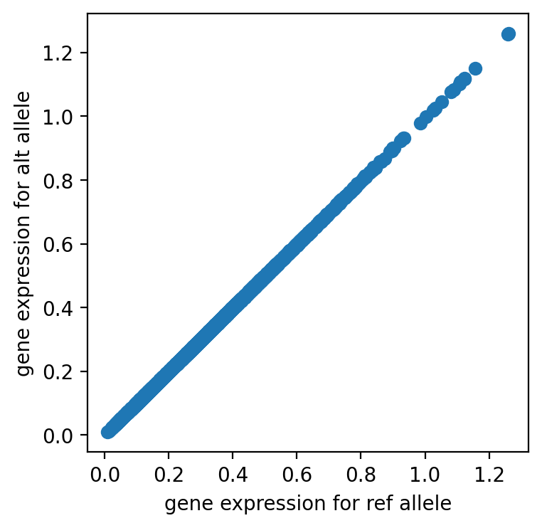

Variant Effect Prediction with Decima¶
Decima’s Variant Effect Prediction (VEP) module allows you to predict the effects of genetic variants on gene expression. This tutorial demonstrates how to use the VEP functionality through both command-line interface (CLI) and Python API. The VEP module takes variant file as input (in TSV or VCF format) and predicts their effects on gene expression across different cell types and tissues if provided.
import os
import pandas as pd
os.environ["CUDA_VISIBLE_DEVICES"] = "0"
CLI API¶
CLI API for variant effect prediction on gene expression.
! decima vep --help
Usage: decima vep [OPTIONS]
Predict variant effect and save to parquet
Examples:
>>> decima vep -v "data/sample.vcf" -o "vep_results.parquet"
>>> decima vep -v "data/sample.vcf" -o "vep_results.parquet" --tasks
"cell_type == 'classical monocyte'" # only predict for classical
monocytes
>>> decima vep -v "data/sample.vcf" -o "vep_results.parquet" --device 0
# use device gpu device 0
>>> decima vep -v "data/sample.vcf" -o "vep_results.parquet" --include-
cols "gene_name,gene_id" # include gene_name and gene_id columns in the
output
>>> decima vep -v "data/sample.vcf" -o "vep_results.parquet" --gene-col
"gene_name" # use gene_name column as gene names if these option passed
genes and variants mapped based on these column not based on the genomic
locus based on the annotaiton.
>>> decima vep -v "data/sample.vcf" -o "vep_results.parquet" --distance-
type tss --min-distance 50000 --max-distance 100000 # predict for
variants within 50kb of the TSS and 100kb of the TSS
>>> decima vep -v "data/sample.vcf" -o "vep_results.parquet" --save-
replicates # save the replicates in the output parquet file
>>> decima vep -v "data/sample.vcf" -o "vep_results.parquet" --genome
"hg38" # use hg38 genome build
>>> decima vep -v "data/sample.vcf" -o "vep_results.parquet" --genome
"path/to/fasta/hg38.fa" # use custom genome build
Options:
-v, --variants PATH Path to the variant .vcf file. VCF file needs to
be normalized. Try normalizing th vcf file in
case of an error. `bcftools norm -f ref.fasta
input.vcf.gz -o output.vcf.gz`
-o, --output_pq PATH Path to the output parquet file.
--tasks TEXT Tasks to predict. If not provided, all tasks will
be predicted.
--chunksize INTEGER Number of variants to process in each chunk.
Loading variants in chunks is more memory
efficient.This chuck of variants will be process
and saved to output parquet file before contineus
to next chunk. Default: 10_000.
--model TEXT `0`, `1`, `2`, `3`, `ensemble` or a path or a
comma-separated list of paths to safetensor files
to perform variant effect prediction. Default:
`ensemble`.
--metadata TEXT Path to the metadata anndata file or name of the
model. If not provided, the compabilite metadata
for the model will be used. Default: ensemble.
--device TEXT Device to use. Default: None which automatically
selects the best device.
--batch-size INTEGER Batch size for the model. Default: 8
--num-workers INTEGER Number of workers for the loader. Default: 4
--distance-type TEXT Type of distance. Default: tss.
--min-distance FLOAT Minimum distance from the end of the gene.
Default: 0.
--max-distance FLOAT Maximum distance from the TSS. Default: 524288.
--include-cols TEXT Columns to include in the output in the original
tsv file to include in the output parquet file.
Default: None.
--gene-col TEXT Column name for gene names. Default: None.
--genome TEXT Genome build. Default: hg38.
--save-replicates Save the replicates in the output parquet file.
Default: False. Only supported for ensemble
models.
--disable-reference-cache Disables the reference cache which significantly
speeds up the computation by caching the
reference expression predictios in the metadata.
--float-precision TEXT Floating-point precision to be used in
calculations. Avaliable options include:
'16-true', '16-mixed', 'bf16-true', 'bf16-mixed',
'32-true', '64-true', '32', '16', and 'bf16'.
--help Show this message and exit.
The VEP module takes a VCF file as input, identifies variants near genes, and predicts their effects on gene expression in a cell type-specific manner. The results are saved as a parquet file containing the following columns:
chrom: Chromosome where the variant is located
pos: Genomic position of the variant
ref: Reference allele
alt: Alternative allele
gene: Gene name
start: Gene start position
end: Gene end position
strand: Gene strand
gene_mask_start: Start position of gene mask
gene_mask_end: End position of gene mask
rel_pos: Relative position within gene
ref_tx: Reference transcript
alt_tx: Alternative transcript
tss_dist: Distance to transcription start site
cell_0, cell_1, etc.: Predicted gene expression changes for each cell type
! decima vep -v "data/sample.vcf" -o "vep_vcf_results.parquet"
decima - INFO - Using device: 0 and genome: hg38
decima - INFO - Performing predictions on VariantDataset(48 variants from ['chr1'] between 516455 and 110234512 bp from TSS)
/gpfs/scratchfs01/site/u/lala8/conda/envs/decima/lib/python3.11/site-packages/lightning_fabric/plugins/environments/slurm.py:204: PossibleUserWarning: The `srun` command is available on your system but is not used. HINT: If your intention is to run Lightning on SLURM, prepend your python command with `srun` like so: srun python3.11 /home/lala8/.local/bin/decima vep -v data/sample ...
GPU available: True (cuda), used: True
TPU available: False, using: 0 TPU cores
💡 Tip: For seamless cloud logging and experiment tracking, try installing [litlogger](https://pypi.org/project/litlogger/) to enable LitLogger, which logs metrics and artifacts automatically to the Lightning Experiments platform.
💡 Tip: For seamless cloud uploads and versioning, try installing [litmodels](https://pypi.org/project/litmodels/) to enable LitModelCheckpoint, which syncs automatically with the Lightning model registry.
LOCAL_RANK: 0 - CUDA_VISIBLE_DEVICES: [0]
Predicting ━━━━━━━━━━━━━━━━━━━━━━━━━━━━━━━━━━ 96/96 0:00:48 • 0:00:00 1.77it/s it/s it/s
?25hdecima - WARNING - Warnings:
decima - WARNING - allele_mismatch_with_reference_genome: 10 alleles out of 48 predictions mismatched with the genome file /home/lala8/.local/share/genomes/hg38/hg38.fa. If this is not expected, please check if you are using the correct genome version.
! cat vep_vcf_results.warnings.log
unknown: 0 / 48
allele_mismatch_with_reference_genome: 10 / 48
results = pd.read_parquet("vep_vcf_results.parquet")
results
| chrom | pos | ref | alt | gene | start | end | strand | gene_mask_start | gene_mask_end | ... | agg_9528 | agg_9529 | agg_9530 | agg_9531 | agg_9532 | agg_9533 | agg_9535 | agg_9536 | agg_9537 | agg_9538 | |
|---|---|---|---|---|---|---|---|---|---|---|---|---|---|---|---|---|---|---|---|---|---|
| 0 | chr1 | 1002308 | T | C | FAM41C | 516455 | 1040743 | - | 163840 | 172672 | ... | -0.038816 | -0.132628 | 0.012945 | -0.057034 | -0.045095 | -0.019845 | -0.048861 | -0.248287 | -0.157361 | -0.202191 |
| 1 | chr1 | 1002308 | T | C | NOC2L | 598861 | 1123149 | - | 163840 | 178946 | ... | 0.007422 | -0.040294 | 0.037184 | -0.039102 | -0.069273 | -0.089758 | 0.085668 | -0.100051 | 0.199948 | -0.228135 |
| 2 | chr1 | 1002308 | T | C | PERM1 | 621645 | 1145933 | - | 163840 | 170729 | ... | -0.039081 | -0.132857 | 0.012576 | -0.057286 | -0.044211 | -0.019335 | -0.049245 | -0.247860 | -0.158028 | -0.202599 |
| 3 | chr1 | 1002308 | T | C | HES4 | 639724 | 1164012 | - | 163840 | 165050 | ... | 0.007090 | -0.040752 | 0.036865 | -0.038709 | -0.069798 | -0.090022 | 0.085745 | -0.100093 | 0.199475 | -0.228633 |
| 4 | chr1 | 1002308 | T | C | FAM87B | 653531 | 1177819 | + | 163840 | 166306 | ... | 0.384038 | 0.383892 | 0.209059 | 0.197611 | 0.147189 | 0.214235 | 0.429188 | 0.046692 | 0.232973 | 0.122444 |
| 5 | chr1 | 1002308 | T | C | RNF223 | 713858 | 1238146 | - | 163840 | 167179 | ... | 0.128468 | 0.201122 | 0.096130 | 0.117577 | -0.126177 | -0.059776 | 0.184826 | -0.009697 | 0.305417 | -0.107728 |
| 6 | chr1 | 1002308 | T | C | C1orf159 | 755913 | 1280201 | - | 163840 | 198383 | ... | 0.382609 | 0.387782 | 0.206949 | 0.192670 | 0.148521 | 0.211755 | 0.428720 | 0.039945 | 0.232015 | 0.117866 |
| 7 | chr1 | 1002308 | T | C | SAMD11 | 760088 | 1284376 | + | 163840 | 184493 | ... | 0.127029 | 0.199535 | 0.092907 | 0.114106 | -0.132683 | -0.060256 | 0.180594 | -0.008448 | 0.303062 | -0.112591 |
| 8 | chr1 | 1002308 | T | C | KLHL17 | 796744 | 1321032 | + | 163840 | 168975 | ... | -0.065035 | -0.009808 | -0.089304 | -0.123990 | -0.237687 | -0.145043 | -0.027265 | -0.172405 | -0.209000 | -0.169588 |
| 9 | chr1 | 1002308 | T | C | PLEKHN1 | 802642 | 1326930 | + | 163840 | 173223 | ... | 0.149715 | 0.036652 | 0.236477 | -0.033082 | -0.059123 | -0.109544 | -0.116550 | -0.056748 | 0.238428 | -0.066090 |
| 10 | chr1 | 1002308 | T | C | TTLL10-AS1 | 819107 | 1343395 | - | 163840 | 170339 | ... | -0.064055 | -0.008839 | -0.088600 | -0.123287 | -0.236878 | -0.144462 | -0.026132 | -0.171725 | -0.208052 | -0.169746 |
| 11 | chr1 | 1002308 | T | C | ISG15 | 837298 | 1361586 | + | 163840 | 177242 | ... | 0.148965 | 0.036048 | 0.236015 | -0.033107 | -0.059445 | -0.110096 | -0.117363 | -0.057286 | 0.237902 | -0.067406 |
| 12 | chr1 | 1002308 | T | C | TNFRSF18 | 846144 | 1370432 | - | 163840 | 166924 | ... | 0.025167 | 0.316047 | 0.052610 | -0.128209 | -0.025701 | 0.018469 | 0.071030 | 0.035337 | 0.035106 | 0.198629 |
| 13 | chr1 | 1002308 | T | C | TNFRSF4 | 853705 | 1377993 | - | 163840 | 166653 | ... | -0.060978 | 0.136151 | 0.222250 | 0.180415 | -0.077709 | 0.059230 | -0.152584 | 0.021212 | 0.387905 | 0.087836 |
| 14 | chr1 | 1002308 | T | C | AGRN | 856280 | 1380568 | + | 163840 | 199838 | ... | 0.024651 | 0.315260 | 0.050833 | -0.121852 | -0.024862 | 0.020706 | 0.065433 | 0.039559 | 0.038879 | 0.207624 |
| 15 | chr1 | 1002308 | T | C | SDF4 | 871619 | 1395907 | - | 163840 | 178999 | ... | -0.069684 | 0.130147 | 0.214494 | 0.163851 | -0.088984 | 0.049194 | -0.161672 | 0.012433 | 0.376862 | 0.079508 |
| 16 | chr1 | 1002308 | T | C | C1QTNF12 | 886274 | 1410562 | - | 163840 | 168116 | ... | -0.068721 | -0.131200 | -0.095311 | 0.046062 | 0.058227 | -0.014569 | -0.110806 | 0.156508 | 0.050760 | 0.086102 |
| 17 | chr1 | 1002308 | T | C | UBE2J2 | 913437 | 1437725 | - | 163840 | 183816 | ... | -0.000722 | -0.065477 | -0.015448 | -0.048512 | 0.080478 | 0.044108 | -0.040190 | -0.109651 | 0.016822 | -0.062620 |
| 18 | chr1 | 1002308 | T | C | ACAP3 | 949161 | 1473449 | - | 163840 | 181059 | ... | -0.068239 | -0.130473 | -0.095077 | 0.046099 | 0.058977 | -0.014226 | -0.110129 | 0.156933 | 0.051034 | 0.086115 |
| 19 | chr1 | 1002308 | T | C | INTS11 | 964243 | 1488531 | - | 163840 | 176946 | ... | -0.000799 | -0.065457 | -0.015547 | -0.048479 | 0.080698 | 0.044615 | -0.040375 | -0.109146 | 0.016773 | -0.063049 |
| 20 | chr1 | 1002308 | T | C | DVL1 | 988970 | 1513258 | - | 163840 | 177982 | ... | 0.144724 | 0.096923 | 0.053529 | 0.178255 | 0.186835 | -0.086366 | 0.078235 | 0.339634 | 0.164180 | 0.351917 |
| 21 | chr1 | 1002308 | T | C | MXRA8 | 1001329 | 1525617 | - | 163840 | 172928 | ... | -0.204588 | -0.164875 | -0.161451 | -0.077614 | 0.001604 | -0.079316 | -0.283131 | -0.060867 | -0.083952 | -0.061946 |
| 22 | chr1 | 109727471 | A | C | GNAT2 | 109259481 | 109783769 | - | 163840 | 180515 | ... | 0.145371 | 0.099419 | 0.055633 | 0.177352 | 0.190575 | -0.084158 | 0.083270 | 0.344398 | 0.166967 | 0.355001 |
| 23 | chr1 | 109728807 | TTT | G | GNAT2 | 109259481 | 109783769 | - | 163840 | 180515 | ... | -0.216764 | -0.175109 | -0.172126 | -0.086336 | -0.018204 | -0.098414 | -0.295143 | -0.081368 | -0.096516 | -0.078732 |
| 24 | chr1 | 109727471 | A | C | SYPL2 | 109302706 | 109826994 | + | 163840 | 179428 | ... | 0.125082 | 0.187445 | 0.094098 | 0.073541 | 0.153524 | 0.122184 | 0.178186 | 0.325020 | 0.131711 | 0.251710 |
| 25 | chr1 | 109728807 | TTT | G | SYPL2 | 109302706 | 109826994 | + | 163840 | 179428 | ... | -0.072443 | -0.081550 | -0.038486 | -0.047714 | 0.226176 | 0.045261 | -0.126760 | 0.371777 | 0.060598 | -0.005164 |
| 26 | chr1 | 109727471 | A | C | ATXN7L2 | 109319639 | 109843927 | + | 163840 | 173165 | ... | 0.125229 | 0.187538 | 0.094372 | 0.073884 | 0.154733 | 0.122949 | 0.178414 | 0.326226 | 0.132067 | 0.251894 |
| 27 | chr1 | 109728807 | TTT | G | ATXN7L2 | 109319639 | 109843927 | + | 163840 | 173165 | ... | -0.072734 | -0.082032 | -0.038806 | -0.047959 | 0.226084 | 0.045132 | -0.126927 | 0.371727 | 0.060446 | -0.005538 |
| 28 | chr1 | 109727471 | A | C | CYB561D1 | 109330212 | 109854500 | + | 163840 | 172720 | ... | -0.109239 | -0.095734 | -0.046736 | -0.160156 | -0.108054 | -0.116374 | 0.049736 | 0.170926 | 0.112000 | 0.250690 |
| 29 | chr1 | 109728807 | TTT | G | CYB561D1 | 109330212 | 109854500 | + | 163840 | 172720 | ... | -0.014338 | -0.047306 | 0.040593 | 0.034276 | 0.086477 | -0.002776 | -0.036525 | 0.105931 | 0.075943 | -0.094462 |
| 30 | chr1 | 109727471 | A | C | GPR61 | 109376032 | 109900320 | + | 163840 | 172374 | ... | -0.114962 | -0.101682 | -0.051288 | -0.167562 | -0.114795 | -0.118255 | 0.045381 | 0.164219 | 0.106147 | 0.242618 |
| 31 | chr1 | 109728807 | TTT | G | GPR61 | 109376032 | 109900320 | + | 163840 | 172374 | ... | -0.014739 | -0.051509 | 0.039989 | 0.034758 | 0.078923 | -0.006194 | -0.037574 | 0.102354 | 0.074973 | -0.093299 |
| 32 | chr1 | 109727471 | A | C | GSTM3 | 109380590 | 109904878 | - | 163840 | 170946 | ... | 0.017597 | -0.080504 | 0.049995 | -0.011808 | -0.271627 | -0.061634 | -0.068092 | -0.169892 | -0.139209 | -0.134266 |
| 33 | chr1 | 109728807 | TTT | G | GSTM3 | 109380590 | 109904878 | - | 163840 | 170946 | ... | -0.297318 | 0.036640 | 0.039409 | 0.172793 | 0.131960 | 0.099102 | -0.127269 | 0.248293 | 0.078142 | 0.244484 |
| 34 | chr1 | 109727471 | A | C | GNAI3 | 109384775 | 109909063 | + | 163840 | 233549 | ... | 0.016951 | -0.081113 | 0.048497 | -0.012860 | -0.272076 | -0.061712 | -0.068612 | -0.168814 | -0.140736 | -0.135443 |
| 35 | chr1 | 109728807 | TTT | G | GNAI3 | 109384775 | 109909063 | + | 163840 | 233549 | ... | -0.296372 | 0.026870 | 0.034203 | 0.171992 | 0.132727 | 0.100970 | -0.133759 | 0.247039 | 0.073710 | 0.242920 |
| 36 | chr1 | 109727471 | A | C | AMPD2 | 109452264 | 109976552 | + | 163840 | 179789 | ... | 0.172656 | 0.238587 | -0.112662 | -0.397093 | -0.048434 | -0.349497 | 0.178258 | -0.541721 | -0.432872 | -0.115762 |
| 37 | chr1 | 109728807 | TTT | G | AMPD2 | 109452264 | 109976552 | + | 163840 | 179789 | ... | -0.587357 | -0.383792 | -0.075256 | 0.116061 | -0.107381 | -0.537354 | -0.290173 | 0.274848 | -0.387343 | -0.475388 |
| 38 | chr1 | 109727471 | A | C | GSTM4 | 109492259 | 110016547 | + | 163840 | 182577 | ... | 0.196620 | 0.244671 | -0.095485 | -0.382966 | -0.053531 | -0.346830 | 0.205384 | -0.547652 | -0.427548 | -0.109037 |
| 39 | chr1 | 109728807 | TTT | G | GSTM4 | 109492259 | 110016547 | + | 163840 | 182577 | ... | -0.598168 | -0.350979 | -0.061809 | 0.137094 | -0.114290 | -0.549722 | -0.316452 | 0.281865 | -0.367328 | -0.457750 |
| 40 | chr1 | 109727471 | A | C | GSTM2 | 109504182 | 110028470 | + | 163840 | 205369 | ... | -0.065015 | -0.134536 | -0.140023 | 0.024319 | -0.060507 | -0.108153 | -0.149791 | -0.038775 | -0.076944 | -0.118178 |
| 41 | chr1 | 109728807 | TTT | G | GSTM2 | 109504182 | 110028470 | + | 163840 | 205369 | ... | -0.138112 | -0.135524 | -0.122887 | 0.003460 | -0.095921 | -0.142851 | -0.133408 | -0.044298 | -0.079864 | 0.063350 |
| 42 | chr1 | 109727471 | A | C | GSTM1 | 109523974 | 110048262 | + | 163840 | 185065 | ... | -0.064923 | -0.134493 | -0.140439 | 0.024307 | -0.060060 | -0.106959 | -0.150438 | -0.038277 | -0.077278 | -0.118272 |
| 43 | chr1 | 109728807 | TTT | G | GSTM1 | 109523974 | 110048262 | + | 163840 | 185065 | ... | -0.138915 | -0.137064 | -0.123798 | 0.002397 | -0.096466 | -0.143198 | -0.133723 | -0.044947 | -0.080987 | 0.062265 |
| 44 | chr1 | 109727471 | A | C | GSTM5 | 109547940 | 110072228 | + | 163840 | 227488 | ... | -0.260050 | -0.168407 | -0.271245 | -0.247335 | -0.234919 | -0.383042 | -0.163728 | -0.055309 | -0.088513 | -0.155641 |
| 45 | chr1 | 109728807 | TTT | G | GSTM5 | 109547940 | 110072228 | + | 163840 | 227488 | ... | 0.107971 | 0.020257 | 0.216171 | 0.572421 | 0.147785 | 0.106555 | 0.096098 | 0.279161 | 0.162524 | 0.332554 |
| 46 | chr1 | 109727471 | A | C | ALX3 | 109710224 | 110234512 | - | 163840 | 174642 | ... | -0.256655 | -0.163457 | -0.266899 | -0.247330 | -0.232560 | -0.386224 | -0.155104 | -0.059262 | -0.081452 | -0.156595 |
| 47 | chr1 | 109728807 | TTT | G | ALX3 | 109710224 | 110234512 | - | 163840 | 174642 | ... | 0.100300 | 0.018010 | 0.212837 | 0.573748 | 0.151573 | 0.110227 | 0.088412 | 0.286110 | 0.165036 | 0.329597 |
48 rows × 8870 columns
Now, we need to match the track labels (agg_1, agg_2, etc.) to their metadata. You can load the metadata as follows:
from decima import DecimaResult
metadata = DecimaResult.load().cell_metadata
metadata
/gpfs/scratchfs01/site/u/lala8/conda/envs/decima/lib/python3.11/site-packages/tqdm/auto.py:21: TqdmWarning: IProgress not found. Please update jupyter and ipywidgets. See https://ipywidgets.readthedocs.io/en/stable/user_install.html
from .autonotebook import tqdm as notebook_tqdm
| cell_type | tissue | organ | disease | study | dataset | region | subregion | celltype_coarse | n_cells | total_counts | n_genes | size_factor | train_pearson | val_pearson | test_pearson | |
|---|---|---|---|---|---|---|---|---|---|---|---|---|---|---|---|---|
| agg_0 | Amygdala excitatory | Amygdala_Amygdala | CNS | healthy | jhpce#tran2021 | brain_atlas | Amygdala | Amygdala | NaN | 331 | 1.592883e+07 | 17000 | 41431.465186 | 0.942459 | 0.841377 | 0.865640 |
| agg_1 | Amygdala excitatory | Amygdala_Basolateral nuclear group (BLN) - lat... | CNS | healthy | SCR_016152 | brain_atlas | Amygdala | Basolateral nuclear group (BLN) - lateral nucl... | NaN | 11369 | 2.952133e+08 | 18080 | 40765.341481 | 0.943098 | 0.838936 | 0.861092 |
| agg_2 | Amygdala excitatory | Amygdala_Bed nucleus of stria terminalis and n... | CNS | healthy | SCR_016152 | brain_atlas | Amygdala | Bed nucleus of stria terminalis and nearby - BNST | NaN | 139 | 2.593231e+06 | 15418 | 42556.387020 | 0.952170 | 0.854544 | 0.866654 |
| agg_3 | Amygdala excitatory | Amygdala_Central nuclear group - CEN | CNS | healthy | SCR_016152 | brain_atlas | Amygdala | Central nuclear group - CEN | NaN | 3892 | 9.946371e+07 | 17959 | 42884.641430 | 0.959744 | 0.863585 | 0.881554 |
| agg_4 | Amygdala excitatory | Amygdala_Corticomedial nuclear group (CMN) - a... | CNS | healthy | SCR_016152 | brain_atlas | Amygdala | Corticomedial nuclear group (CMN) - anterior c... | NaN | 2945 | 1.281619e+08 | 17885 | 41816.741933 | 0.951365 | 0.854304 | 0.868902 |
| ... | ... | ... | ... | ... | ... | ... | ... | ... | ... | ... | ... | ... | ... | ... | ... | ... |
| agg_9533 | vascular associated smooth muscle cell | upper lobe of right lung | lung | NA | ENCODE | scimilarity | nan | nan | NaN | 21 | 3.483375e+04 | 8515 | 35404.911768 | 0.735213 | 0.665647 | 0.654491 |
| agg_9535 | vascular associated smooth muscle cell | urinary bladder | urinary | healthy | GSE129845 | scimilarity | nan | nan | NaN | 24 | 8.498500e+04 | 7337 | 26189.415789 | 0.809852 | 0.690022 | 0.656160 |
| agg_9536 | vascular associated smooth muscle cell | uterus | uterus | NA | ENCODE | scimilarity | nan | nan | NaN | 272 | 5.700762e+05 | 14769 | 44938.403867 | 0.915329 | 0.808941 | 0.839993 |
| agg_9537 | vascular associated smooth muscle cell | uterus | uterus | healthy | e5f58829-1a66-40b5-a624-9046778e74f5 | scimilarity | nan | nan | NaN | 472 | 1.089170e+07 | 14514 | 30145.422152 | 0.852339 | 0.717682 | 0.727469 |
| agg_9538 | vascular associated smooth muscle cell | vasculature | vasculature | healthy | e5f58829-1a66-40b5-a624-9046778e74f5 | scimilarity | nan | nan | NaN | 1853 | 5.992697e+07 | 16764 | 36464.273371 | 0.909855 | 0.780413 | 0.796351 |
8856 rows × 16 columns
Instead of a vcf, you can also pass a tsv file with the following format where the first 4 columns are chrom, pos, ref, alt.
! cat data/variants.tsv | column -t -s $'\t'
chrom pos ref alt
chr1 1000018 G A
chr1 1002308 T C
chr1 109727471 A C
chr1 109728286 TTT G
chr1 109728807 T GG
You can limit predictions to variant-gene pairs with a maximum distance (say 100kbp).
! decima vep -v "data/variants.tsv" -o "vep_results.parquet" --max-distance 100_000 --distance-type "tss"
decima - INFO - Using device: 0 and genome: hg38
Warning: You are sending unauthenticated requests to the HF Hub. Please set a HF_TOKEN to enable higher rate limits and faster downloads.
decima - INFO - Performing predictions on VariantDataset(33 variants from ['chr1'] between 598861 and 110072228 bp from TSS)
/gpfs/scratchfs01/site/u/lala8/conda/envs/decima/lib/python3.11/site-packages/lightning_fabric/plugins/environments/slurm.py:204: PossibleUserWarning: The `srun` command is available on your system but is not used. HINT: If your intention is to run Lightning on SLURM, prepend your python command with `srun` like so: srun python3.11 /home/lala8/.local/bin/decima vep -v data/varian ...
GPU available: True (cuda), used: True
TPU available: False, using: 0 TPU cores
💡 Tip: For seamless cloud logging and experiment tracking, try installing [litlogger](https://pypi.org/project/litlogger/) to enable LitLogger, which logs metrics and artifacts automatically to the Lightning Experiments platform.
💡 Tip: For seamless cloud uploads and versioning, try installing [litmodels](https://pypi.org/project/litmodels/) to enable LitModelCheckpoint, which syncs automatically with the Lightning model registry.
LOCAL_RANK: 0 - CUDA_VISIBLE_DEVICES: [0]
Predicting ━━━━━━━━━━━━━━━━━━━━━━━━━━━━━━━━━━ 66/66 0:00:31 • 0:00:00 2.09it/s it/s it/s
?25hdecima - WARNING - Warnings:
decima - WARNING - allele_mismatch_with_reference_genome: 5 alleles out of 33 predictions mismatched with the genome file /home/lala8/.local/share/genomes/hg38/hg38.fa. If this is not expected, please check if you are using the correct genome version.
If you have already have a mapping between genes and variants, you can use this mapping so predictions will only will be computed between these pairs. Otherwise, the variant effect will be computed for all genes within Decima’s distance window.
! decima vep -v "data/variants_gene.tsv" -o "vep_gene_results.parquet" --gene-col "gene"
decima - INFO - Using device: 0 and genome: hg38
Warning: You are sending unauthenticated requests to the HF Hub. Please set a HF_TOKEN to enable higher rate limits and faster downloads.
decima - INFO - Performing predictions on VariantDataset(2 variants from ['chr1'] between 837298 and 1361586 bp from TSS)
/gpfs/scratchfs01/site/u/lala8/conda/envs/decima/lib/python3.11/site-packages/lightning_fabric/plugins/environments/slurm.py:204: PossibleUserWarning: The `srun` command is available on your system but is not used. HINT: If your intention is to run Lightning on SLURM, prepend your python command with `srun` like so: srun python3.11 /home/lala8/.local/bin/decima vep -v data/varian ...
GPU available: True (cuda), used: True
TPU available: False, using: 0 TPU cores
💡 Tip: For seamless cloud logging and experiment tracking, try installing [litlogger](https://pypi.org/project/litlogger/) to enable LitLogger, which logs metrics and artifacts automatically to the Lightning Experiments platform.
💡 Tip: For seamless cloud uploads and versioning, try installing [litmodels](https://pypi.org/project/litmodels/) to enable LitModelCheckpoint, which syncs automatically with the Lightning model registry.
LOCAL_RANK: 0 - CUDA_VISIBLE_DEVICES: [0]
Predicting ━━━━━━━━━━━━━━━━━━━━━━━━━━━━━━━━━━━━ 4/4 0:00:02 • 0:00:00 1.65it/s [2;4m1.97it/s
?25h
pd.read_parquet("vep_gene_results.parquet")
| chrom | pos | ref | alt | gene | start | end | strand | gene_mask_start | gene_mask_end | ... | agg_9528 | agg_9529 | agg_9530 | agg_9531 | agg_9532 | agg_9533 | agg_9535 | agg_9536 | agg_9537 | agg_9538 | |
|---|---|---|---|---|---|---|---|---|---|---|---|---|---|---|---|---|---|---|---|---|---|
| 0 | chr1 | 1000018 | G | A | ISG15 | 837298 | 1361586 | + | 163840 | 177242 | ... | -0.757413 | -0.096282 | -0.507625 | -1.093171 | -0.618375 | -1.054209 | -0.035263 | -0.046396 | -0.040251 | -0.128908 |
| 1 | chr1 | 1002308 | T | C | ISG15 | 837298 | 1361586 | + | 163840 | 177242 | ... | 0.960004 | 0.592360 | 1.353235 | 2.281869 | 0.917179 | 0.980594 | 0.889794 | 1.287064 | 0.981355 | 1.071923 |
2 rows × 8870 columns
The vep api reads n (default=10_000) number of variants from vcf file, performs predictions on these variants, saves them to a parquet file, then performs predictions for the next chunk. You can change the chunksize:
! decima vep -v "data/sample.vcf" -o "vep_vcf_results.parquet" --chunksize 1
decima - INFO - Using device: 0 and genome: hg38
Warning: You are sending unauthenticated requests to the HF Hub. Please set a HF_TOKEN to enable higher rate limits and faster downloads.
decima - INFO - Performing predictions on VariantDataset(22 variants from ['chr1'] between 516455 and 1525617 bp from TSS)
/gpfs/scratchfs01/site/u/lala8/conda/envs/decima/lib/python3.11/site-packages/lightning_fabric/plugins/environments/slurm.py:204: PossibleUserWarning: The `srun` command is available on your system but is not used. HINT: If your intention is to run Lightning on SLURM, prepend your python command with `srun` like so: srun python3.11 /home/lala8/.local/bin/decima vep -v data/sample ...
GPU available: True (cuda), used: True
TPU available: False, using: 0 TPU cores
💡 Tip: For seamless cloud logging and experiment tracking, try installing [litlogger](https://pypi.org/project/litlogger/) to enable LitLogger, which logs metrics and artifacts automatically to the Lightning Experiments platform.
💡 Tip: For seamless cloud uploads and versioning, try installing [litmodels](https://pypi.org/project/litmodels/) to enable LitModelCheckpoint, which syncs automatically with the Lightning model registry.
LOCAL_RANK: 0 - CUDA_VISIBLE_DEVICES: [0]
Predicting ━━━━━━━━━━━━━━━━━━━━━━━━━━━━━━━━━━ 44/44 0:00:18 • 0:00:00 2.31it/s it/s it/s
?25hdecima - INFO - Performing predictions on VariantDataset(13 variants from ['chr1'] between 109259481 and 110234512 bp from TSS)
/gpfs/scratchfs01/site/u/lala8/conda/envs/decima/lib/python3.11/site-packages/lightning_fabric/plugins/environments/slurm.py:204: PossibleUserWarning: The `srun` command is available on your system but is not used. HINT: If your intention is to run Lightning on SLURM, prepend your python command with `srun` like so: srun python3.11 /home/lala8/.local/bin/decima vep -v data/sample ...
GPU available: True (cuda), used: True
TPU available: False, using: 0 TPU cores
💡 Tip: For seamless cloud logging and experiment tracking, try installing [litlogger](https://pypi.org/project/litlogger/) to enable LitLogger, which logs metrics and artifacts automatically to the Lightning Experiments platform.
💡 Tip: For seamless cloud uploads and versioning, try installing [litmodels](https://pypi.org/project/litmodels/) to enable LitModelCheckpoint, which syncs automatically with the Lightning model registry.
LOCAL_RANK: 0 - CUDA_VISIBLE_DEVICES: [0]
Predicting ━━━━━━━━━━━━━━━━━━━━━━━━━━━━━━━━━━ 26/26 0:00:10 • 0:00:00 2.31it/s [2;4m2.40it/s
?25hdecima - INFO - Performing predictions on VariantDataset(13 variants from ['chr1'] between 109259481 and 110234512 bp from TSS)
/gpfs/scratchfs01/site/u/lala8/conda/envs/decima/lib/python3.11/site-packages/lightning_fabric/plugins/environments/slurm.py:204: PossibleUserWarning: The `srun` command is available on your system but is not used. HINT: If your intention is to run Lightning on SLURM, prepend your python command with `srun` like so: srun python3.11 /home/lala8/.local/bin/decima vep -v data/sample ...
GPU available: True (cuda), used: True
TPU available: False, using: 0 TPU cores
💡 Tip: For seamless cloud logging and experiment tracking, try installing [litlogger](https://pypi.org/project/litlogger/) to enable LitLogger, which logs metrics and artifacts automatically to the Lightning Experiments platform.
💡 Tip: For seamless cloud uploads and versioning, try installing [litmodels](https://pypi.org/project/litmodels/) to enable LitModelCheckpoint, which syncs automatically with the Lightning model registry.
LOCAL_RANK: 0 - CUDA_VISIBLE_DEVICES: [0]
Predicting ━━━━━━━━━━━━━━━━━━━━━━━━━━━━━━━━━━ 26/26 0:00:18 • 0:00:00 1.41it/s [2;4m1.35it/s
?25hdecima - WARNING - Warnings:
decima - WARNING - allele_mismatch_with_reference_genome: 10 alleles out of 48 predictions mismatched with the genome file /home/lala8/.local/share/genomes/hg38/hg38.fa. If this is not expected, please check if you are using the correct genome version.
Python API¶
Similarly, variant effect prediction can be performed using the Python API as well.
import pandas as pd
import torch
from decima.vep import predict_variant_effect
device = "cuda" if torch.cuda.is_available() else "cpu"
%matplotlib inline
df_variant = pd.read_table("data/variants.tsv")
df_variant
| chrom | pos | ref | alt | |
|---|---|---|---|---|
| 0 | chr1 | 1000018 | G | A |
| 1 | chr1 | 1002308 | T | C |
| 2 | chr1 | 109727471 | A | C |
| 3 | chr1 | 109728286 | TTT | G |
| 4 | chr1 | 109728807 | T | GG |
Simply pass your dataframe to predict_variant_effect function which will return dataframe for the prediction. You can pass tasks query to subset predictions for specific cells. Moreover, by default the ensemble of 4 replicates is used. To use a specific replicate, pass model= 0, 1 , 2 or 3 or pass your custom model. If you pass include_cols argument the columns in the input will be maintained in the output. To further select variants based on distance to tss use the max_distance argument.
predict_variant_effect?
Signature:
predict_variant_effect(
df_variant: Union[pandas.core.frame.DataFrame, str],
output_pq: Optional[str] = None,
tasks: Union[str, List[str], NoneType] = None,
model: Union[int, str, List[str]] = 'ensemble',
metadata_anndata: Optional[str] = None,
chunksize: int = 10000,
batch_size: int = 1,
num_workers: int = 16,
device: Optional[str] = None,
include_cols: Optional[List[str]] = None,
gene_col: Optional[str] = None,
distance_type: Optional[str] = 'tss',
min_distance: Optional[float] = 0,
max_distance: Optional[float] = inf,
genome: str = 'hg38',
save_replicates: bool = False,
reference_cache: bool = True,
float_precision: str = '32',
) -> None
Docstring:
Predict variant effect and save to parquet
Args:
df_variant (pd.DataFrame or str): DataFrame with variant information or path to variant file
output_pq (str, optional): Path to save the parquet file. Defaults to None.
tasks (str, optional): Tasks to predict. Defaults to None.
model (int, optional): Model to use. Defaults to DEFAULT_ENSEMBLE.
metadata_anndata (str, optional): Path to anndata file. Defaults to None.
chunksize (int, optional): Number of variants to predict in each chunk. Defaults to 10_000.
batch_size (int, optional): Batch size. Defaults to 1.
num_workers (int, optional): Number of workers. Defaults to 16.
device (str, optional): Device to use. Defaults to None.
include_cols (list, optional): Columns to include in the output. Defaults to None.
gene_col (str, optional): Column name for gene names. Defaults to None.
distance_type (str, optional): Type of distance. Defaults to "tss".
min_distance (float, optional): Minimum distance from the end of the gene. Defaults to 0 (inclusive).
max_distance (float, optional): Maximum distance from the TSS. Defaults to inf (exclusive).
genome (str, optional): Genome name or path to the genome fasta file. Defaults to "hg38".
save_replicates (bool, optional): Save the replicates in the output. Defaults to False.
reference_cache (bool, optional): Whether to use reference cache. Defaults to True.
float_precision (str, optional): Floating-point precision. Defaults to "32".
File: ~/decima/src/decima/vep/vep.py
Type: function
predict_variant_effect(df_variant)
Warning: You are sending unauthenticated requests to the HF Hub. Please set a HF_TOKEN to enable higher rate limits and faster downloads.
/gpfs/scratchfs01/site/u/lala8/conda/envs/decima/lib/python3.11/site-packages/lightning_fabric/plugins/environments/slurm.py:204: PossibleUserWarning: The `srun` command is available on your system but is not used. HINT: If your intention is to run Lightning on SLURM, prepend your python command with `srun` like so: srun python /gpfs/scratchfs01/site/u/lala8/conda/envs/decima/lib ...
GPU available: True (cuda), used: True
TPU available: False, using: 0 TPU cores
💡 Tip: For seamless cloud logging and experiment tracking, try installing [litlogger](https://pypi.org/project/litlogger/) to enable LitLogger, which logs metrics and artifacts automatically to the Lightning Experiments platform.
💡 Tip: For seamless cloud uploads and versioning, try installing [litmodels](https://pypi.org/project/litmodels/) to enable LitModelCheckpoint, which syncs automatically with the Lightning model registry.
LOCAL_RANK: 0 - CUDA_VISIBLE_DEVICES: [0]
/gpfs/scratchfs01/site/u/lala8/conda/envs/decima/lib/python3.11/site-packages/rich/live.py:260: UserWarning: install "ipywidgets" for Jupyter support
Warnings:
allele_mismatch_with_reference_genome: 13 alleles out of 82 predictions mismatched with the genome file /home/lala8/.local/share/genomes/hg38/hg38.fa. If this is not expected, please check if you are using the correct genome version.
| chrom | pos | ref | alt | gene | start | end | strand | gene_mask_start | gene_mask_end | ... | agg_9528 | agg_9529 | agg_9530 | agg_9531 | agg_9532 | agg_9533 | agg_9535 | agg_9536 | agg_9537 | agg_9538 | |
|---|---|---|---|---|---|---|---|---|---|---|---|---|---|---|---|---|---|---|---|---|---|
| 0 | chr1 | 1000018 | G | A | FAM41C | 516455 | 1040743 | - | 163840 | 172672 | ... | -0.006633 | -0.043378 | -0.031300 | -0.002222 | 0.046180 | -0.025395 | -0.086669 | 0.013435 | -0.037723 | -0.062421 |
| 1 | chr1 | 1002308 | T | C | FAM41C | 516455 | 1040743 | - | 163840 | 172672 | ... | -0.245506 | -0.190218 | -0.137243 | 0.051545 | 0.003048 | -0.128578 | -0.236718 | 0.017593 | -0.094332 | -0.070269 |
| 2 | chr1 | 1000018 | G | A | NOC2L | 598861 | 1123149 | - | 163840 | 178946 | ... | -0.005553 | -0.041326 | -0.028948 | 0.001374 | 0.048067 | -0.024705 | -0.086391 | 0.017870 | -0.035195 | -0.059956 |
| 3 | chr1 | 1002308 | T | C | NOC2L | 598861 | 1123149 | - | 163840 | 178946 | ... | -0.241619 | -0.187318 | -0.135041 | 0.050612 | 0.005031 | -0.125195 | -0.233266 | 0.019467 | -0.093385 | -0.068222 |
| 4 | chr1 | 1000018 | G | A | PERM1 | 621645 | 1145933 | - | 163840 | 170729 | ... | 0.152952 | 0.291293 | -0.198963 | -0.430064 | 0.270837 | -0.239649 | 0.068286 | -0.406054 | -0.293787 | -0.101794 |
| ... | ... | ... | ... | ... | ... | ... | ... | ... | ... | ... | ... | ... | ... | ... | ... | ... | ... | ... | ... | ... | ... |
| 77 | chr1 | 109728286 | TTT | G | GSTM5 | 109547940 | 110072228 | + | 163840 | 227488 | ... | -0.390896 | -0.056248 | -0.131846 | 0.002266 | 0.052115 | -0.073442 | -0.171080 | 0.151064 | -0.122629 | 0.059758 |
| 78 | chr1 | 109728807 | T | GG | GSTM5 | 109547940 | 110072228 | + | 163840 | 227488 | ... | -0.026459 | -0.118378 | 0.084991 | -0.022175 | -0.209899 | -0.091537 | 0.038770 | -0.119916 | -0.181460 | -0.167976 |
| 79 | chr1 | 109727471 | A | C | ALX3 | 109710224 | 110234512 | - | 163840 | 174642 | ... | -0.413859 | -0.029041 | -0.079324 | 0.070361 | 0.022809 | -0.047733 | -0.206144 | 0.133108 | -0.046837 | -0.011002 |
| 80 | chr1 | 109728286 | TTT | G | ALX3 | 109710224 | 110234512 | - | 163840 | 174642 | ... | -0.085005 | -0.115757 | -0.085665 | -0.038702 | 0.006083 | -0.039524 | -0.157262 | -0.003096 | -0.075535 | -0.172014 |
| 81 | chr1 | 109728807 | T | GG | ALX3 | 109710224 | 110234512 | - | 163840 | 174642 | ... | -0.223234 | -0.099899 | -0.119575 | 0.070561 | -0.016501 | -0.110469 | -0.208272 | 0.088579 | -0.018304 | 0.014062 |
82 rows × 8870 columns
You can predict and save predictions to file similar to CLI api based on dataframe.
predict_variant_effect(df_variant, output_pq="vep_results_py.parquet", device=device)
/gpfs/scratchfs01/site/u/lala8/conda/envs/decima/lib/python3.11/site-packages/lightning_fabric/plugins/environments/slurm.py:204: PossibleUserWarning: The `srun` command is available on your system but is not used. HINT: If your intention is to run Lightning on SLURM, prepend your python command with `srun` like so: srun python /gpfs/scratchfs01/site/u/lala8/conda/envs/decima/lib ...
GPU available: True (cuda), used: True
TPU available: False, using: 0 TPU cores
💡 Tip: For seamless cloud logging and experiment tracking, try installing [litlogger](https://pypi.org/project/litlogger/) to enable LitLogger, which logs metrics and artifacts automatically to the Lightning Experiments platform.
💡 Tip: For seamless cloud uploads and versioning, try installing [litmodels](https://pypi.org/project/litmodels/) to enable LitModelCheckpoint, which syncs automatically with the Lightning model registry.
LOCAL_RANK: 0 - CUDA_VISIBLE_DEVICES: [0]
/gpfs/scratchfs01/site/u/lala8/conda/envs/decima/lib/python3.11/site-packages/rich/live.py:260: UserWarning: install "ipywidgets" for Jupyter support
Warnings:
allele_mismatch_with_reference_genome: 13 alleles out of 82 predictions mismatched with the genome file /home/lala8/.local/share/genomes/hg38/hg38.fa. If this is not expected, please check if you are using the correct genome version.
pd.read_parquet("vep_results_py.parquet")
| chrom | pos | ref | alt | gene | start | end | strand | gene_mask_start | gene_mask_end | ... | agg_9528 | agg_9529 | agg_9530 | agg_9531 | agg_9532 | agg_9533 | agg_9535 | agg_9536 | agg_9537 | agg_9538 | |
|---|---|---|---|---|---|---|---|---|---|---|---|---|---|---|---|---|---|---|---|---|---|
| 0 | chr1 | 1000018 | G | A | FAM41C | 516455 | 1040743 | - | 163840 | 172672 | ... | -0.006633 | -0.043378 | -0.031300 | -0.002222 | 0.046180 | -0.025395 | -0.086669 | 0.013435 | -0.037723 | -0.062421 |
| 1 | chr1 | 1002308 | T | C | FAM41C | 516455 | 1040743 | - | 163840 | 172672 | ... | -0.245506 | -0.190218 | -0.137243 | 0.051545 | 0.003048 | -0.128578 | -0.236718 | 0.017593 | -0.094332 | -0.070269 |
| 2 | chr1 | 1000018 | G | A | NOC2L | 598861 | 1123149 | - | 163840 | 178946 | ... | -0.005553 | -0.041326 | -0.028948 | 0.001374 | 0.048067 | -0.024705 | -0.086391 | 0.017870 | -0.035195 | -0.059956 |
| 3 | chr1 | 1002308 | T | C | NOC2L | 598861 | 1123149 | - | 163840 | 178946 | ... | -0.241619 | -0.187318 | -0.135041 | 0.050612 | 0.005031 | -0.125195 | -0.233266 | 0.019467 | -0.093385 | -0.068222 |
| 4 | chr1 | 1000018 | G | A | PERM1 | 621645 | 1145933 | - | 163840 | 170729 | ... | 0.152952 | 0.291293 | -0.198963 | -0.430064 | 0.270837 | -0.239649 | 0.068286 | -0.406054 | -0.293787 | -0.101794 |
| ... | ... | ... | ... | ... | ... | ... | ... | ... | ... | ... | ... | ... | ... | ... | ... | ... | ... | ... | ... | ... | ... |
| 77 | chr1 | 109728286 | TTT | G | GSTM5 | 109547940 | 110072228 | + | 163840 | 227488 | ... | -0.390896 | -0.056248 | -0.131846 | 0.002266 | 0.052115 | -0.073442 | -0.171080 | 0.151064 | -0.122629 | 0.059758 |
| 78 | chr1 | 109728807 | T | GG | GSTM5 | 109547940 | 110072228 | + | 163840 | 227488 | ... | -0.026459 | -0.118378 | 0.084991 | -0.022175 | -0.209899 | -0.091537 | 0.038770 | -0.119916 | -0.181460 | -0.167976 |
| 79 | chr1 | 109727471 | A | C | ALX3 | 109710224 | 110234512 | - | 163840 | 174642 | ... | -0.413859 | -0.029041 | -0.079324 | 0.070361 | 0.022809 | -0.047733 | -0.206144 | 0.133108 | -0.046837 | -0.011002 |
| 80 | chr1 | 109728286 | TTT | G | ALX3 | 109710224 | 110234512 | - | 163840 | 174642 | ... | -0.085005 | -0.115757 | -0.085665 | -0.038702 | 0.006083 | -0.039524 | -0.157262 | -0.003096 | -0.075535 | -0.172014 |
| 81 | chr1 | 109728807 | T | GG | ALX3 | 109710224 | 110234512 | - | 163840 | 174642 | ... | -0.223234 | -0.099899 | -0.119575 | 0.070561 | -0.016501 | -0.110469 | -0.208272 | 0.088579 | -0.018304 | 0.014062 |
82 rows × 8870 columns
Or variant effect prediction can be performed on a vcf file.
predict_variant_effect("data/sample.vcf", output_pq="vep_results_vcf_py.parquet", device=device)
/gpfs/scratchfs01/site/u/lala8/conda/envs/decima/lib/python3.11/site-packages/lightning_fabric/plugins/environments/slurm.py:204: PossibleUserWarning: The `srun` command is available on your system but is not used. HINT: If your intention is to run Lightning on SLURM, prepend your python command with `srun` like so: srun python /gpfs/scratchfs01/site/u/lala8/conda/envs/decima/lib ...
GPU available: True (cuda), used: True
TPU available: False, using: 0 TPU cores
💡 Tip: For seamless cloud logging and experiment tracking, try installing [litlogger](https://pypi.org/project/litlogger/) to enable LitLogger, which logs metrics and artifacts automatically to the Lightning Experiments platform.
💡 Tip: For seamless cloud uploads and versioning, try installing [litmodels](https://pypi.org/project/litmodels/) to enable LitModelCheckpoint, which syncs automatically with the Lightning model registry.
LOCAL_RANK: 0 - CUDA_VISIBLE_DEVICES: [0]
/gpfs/scratchfs01/site/u/lala8/conda/envs/decima/lib/python3.11/site-packages/rich/live.py:260: UserWarning: install "ipywidgets" for Jupyter support
Warnings:
allele_mismatch_with_reference_genome: 10 alleles out of 48 predictions mismatched with the genome file /home/lala8/.local/share/genomes/hg38/hg38.fa. If this is not expected, please check if you are using the correct genome version.
pd.read_parquet("vep_results_vcf_py.parquet")
| chrom | pos | ref | alt | gene | start | end | strand | gene_mask_start | gene_mask_end | ... | agg_9528 | agg_9529 | agg_9530 | agg_9531 | agg_9532 | agg_9533 | agg_9535 | agg_9536 | agg_9537 | agg_9538 | |
|---|---|---|---|---|---|---|---|---|---|---|---|---|---|---|---|---|---|---|---|---|---|
| 0 | chr1 | 1002308 | T | C | FAM41C | 516455 | 1040743 | - | 163840 | 172672 | ... | -0.038816 | -0.132628 | 0.012945 | -0.057034 | -0.045095 | -0.019845 | -0.048861 | -0.248287 | -0.157361 | -0.202191 |
| 1 | chr1 | 1002308 | T | C | NOC2L | 598861 | 1123149 | - | 163840 | 178946 | ... | 0.007422 | -0.040294 | 0.037184 | -0.039102 | -0.069273 | -0.089758 | 0.085668 | -0.100051 | 0.199948 | -0.228135 |
| 2 | chr1 | 1002308 | T | C | PERM1 | 621645 | 1145933 | - | 163840 | 170729 | ... | -0.039081 | -0.132857 | 0.012576 | -0.057286 | -0.044211 | -0.019335 | -0.049245 | -0.247860 | -0.158028 | -0.202599 |
| 3 | chr1 | 1002308 | T | C | HES4 | 639724 | 1164012 | - | 163840 | 165050 | ... | 0.007090 | -0.040752 | 0.036865 | -0.038709 | -0.069798 | -0.090022 | 0.085745 | -0.100093 | 0.199475 | -0.228633 |
| 4 | chr1 | 1002308 | T | C | FAM87B | 653531 | 1177819 | + | 163840 | 166306 | ... | 0.384038 | 0.383892 | 0.209059 | 0.197611 | 0.147189 | 0.214235 | 0.429188 | 0.046692 | 0.232973 | 0.122444 |
| 5 | chr1 | 1002308 | T | C | RNF223 | 713858 | 1238146 | - | 163840 | 167179 | ... | 0.128468 | 0.201122 | 0.096130 | 0.117577 | -0.126177 | -0.059776 | 0.184826 | -0.009697 | 0.305417 | -0.107728 |
| 6 | chr1 | 1002308 | T | C | C1orf159 | 755913 | 1280201 | - | 163840 | 198383 | ... | 0.382609 | 0.387782 | 0.206949 | 0.192670 | 0.148521 | 0.211755 | 0.428720 | 0.039945 | 0.232015 | 0.117866 |
| 7 | chr1 | 1002308 | T | C | SAMD11 | 760088 | 1284376 | + | 163840 | 184493 | ... | 0.127029 | 0.199535 | 0.092907 | 0.114106 | -0.132683 | -0.060256 | 0.180594 | -0.008448 | 0.303062 | -0.112591 |
| 8 | chr1 | 1002308 | T | C | KLHL17 | 796744 | 1321032 | + | 163840 | 168975 | ... | -0.065035 | -0.009808 | -0.089304 | -0.123990 | -0.237687 | -0.145043 | -0.027265 | -0.172405 | -0.209000 | -0.169588 |
| 9 | chr1 | 1002308 | T | C | PLEKHN1 | 802642 | 1326930 | + | 163840 | 173223 | ... | 0.149715 | 0.036652 | 0.236477 | -0.033082 | -0.059123 | -0.109544 | -0.116550 | -0.056748 | 0.238428 | -0.066090 |
| 10 | chr1 | 1002308 | T | C | TTLL10-AS1 | 819107 | 1343395 | - | 163840 | 170339 | ... | -0.064055 | -0.008839 | -0.088600 | -0.123287 | -0.236878 | -0.144462 | -0.026132 | -0.171725 | -0.208052 | -0.169746 |
| 11 | chr1 | 1002308 | T | C | ISG15 | 837298 | 1361586 | + | 163840 | 177242 | ... | 0.148965 | 0.036048 | 0.236015 | -0.033107 | -0.059445 | -0.110096 | -0.117363 | -0.057286 | 0.237902 | -0.067406 |
| 12 | chr1 | 1002308 | T | C | TNFRSF18 | 846144 | 1370432 | - | 163840 | 166924 | ... | 0.025167 | 0.316047 | 0.052610 | -0.128209 | -0.025701 | 0.018469 | 0.071030 | 0.035337 | 0.035106 | 0.198629 |
| 13 | chr1 | 1002308 | T | C | TNFRSF4 | 853705 | 1377993 | - | 163840 | 166653 | ... | -0.060978 | 0.136151 | 0.222250 | 0.180415 | -0.077709 | 0.059230 | -0.152584 | 0.021212 | 0.387905 | 0.087836 |
| 14 | chr1 | 1002308 | T | C | AGRN | 856280 | 1380568 | + | 163840 | 199838 | ... | 0.024651 | 0.315260 | 0.050833 | -0.121852 | -0.024862 | 0.020706 | 0.065433 | 0.039559 | 0.038879 | 0.207624 |
| 15 | chr1 | 1002308 | T | C | SDF4 | 871619 | 1395907 | - | 163840 | 178999 | ... | -0.069684 | 0.130147 | 0.214494 | 0.163851 | -0.088984 | 0.049194 | -0.161672 | 0.012433 | 0.376862 | 0.079508 |
| 16 | chr1 | 1002308 | T | C | C1QTNF12 | 886274 | 1410562 | - | 163840 | 168116 | ... | -0.068721 | -0.131200 | -0.095311 | 0.046062 | 0.058227 | -0.014569 | -0.110806 | 0.156508 | 0.050760 | 0.086102 |
| 17 | chr1 | 1002308 | T | C | UBE2J2 | 913437 | 1437725 | - | 163840 | 183816 | ... | -0.000722 | -0.065477 | -0.015448 | -0.048512 | 0.080478 | 0.044108 | -0.040190 | -0.109651 | 0.016822 | -0.062620 |
| 18 | chr1 | 1002308 | T | C | ACAP3 | 949161 | 1473449 | - | 163840 | 181059 | ... | -0.068239 | -0.130473 | -0.095077 | 0.046099 | 0.058977 | -0.014226 | -0.110129 | 0.156933 | 0.051034 | 0.086115 |
| 19 | chr1 | 1002308 | T | C | INTS11 | 964243 | 1488531 | - | 163840 | 176946 | ... | -0.000799 | -0.065457 | -0.015547 | -0.048479 | 0.080698 | 0.044615 | -0.040375 | -0.109146 | 0.016773 | -0.063049 |
| 20 | chr1 | 1002308 | T | C | DVL1 | 988970 | 1513258 | - | 163840 | 177982 | ... | 0.144724 | 0.096923 | 0.053529 | 0.178255 | 0.186835 | -0.086366 | 0.078235 | 0.339634 | 0.164180 | 0.351917 |
| 21 | chr1 | 1002308 | T | C | MXRA8 | 1001329 | 1525617 | - | 163840 | 172928 | ... | -0.204588 | -0.164875 | -0.161451 | -0.077614 | 0.001604 | -0.079316 | -0.283131 | -0.060867 | -0.083952 | -0.061946 |
| 22 | chr1 | 109727471 | A | C | GNAT2 | 109259481 | 109783769 | - | 163840 | 180515 | ... | 0.145371 | 0.099419 | 0.055633 | 0.177352 | 0.190575 | -0.084158 | 0.083270 | 0.344398 | 0.166967 | 0.355001 |
| 23 | chr1 | 109728807 | TTT | G | GNAT2 | 109259481 | 109783769 | - | 163840 | 180515 | ... | -0.216764 | -0.175109 | -0.172126 | -0.086336 | -0.018204 | -0.098414 | -0.295143 | -0.081368 | -0.096516 | -0.078732 |
| 24 | chr1 | 109727471 | A | C | SYPL2 | 109302706 | 109826994 | + | 163840 | 179428 | ... | 0.125082 | 0.187445 | 0.094098 | 0.073541 | 0.153524 | 0.122184 | 0.178186 | 0.325020 | 0.131711 | 0.251710 |
| 25 | chr1 | 109728807 | TTT | G | SYPL2 | 109302706 | 109826994 | + | 163840 | 179428 | ... | -0.072443 | -0.081550 | -0.038486 | -0.047714 | 0.226176 | 0.045261 | -0.126760 | 0.371777 | 0.060598 | -0.005164 |
| 26 | chr1 | 109727471 | A | C | ATXN7L2 | 109319639 | 109843927 | + | 163840 | 173165 | ... | 0.125229 | 0.187538 | 0.094372 | 0.073884 | 0.154733 | 0.122949 | 0.178414 | 0.326226 | 0.132067 | 0.251894 |
| 27 | chr1 | 109728807 | TTT | G | ATXN7L2 | 109319639 | 109843927 | + | 163840 | 173165 | ... | -0.072734 | -0.082032 | -0.038806 | -0.047959 | 0.226084 | 0.045132 | -0.126927 | 0.371727 | 0.060446 | -0.005538 |
| 28 | chr1 | 109727471 | A | C | CYB561D1 | 109330212 | 109854500 | + | 163840 | 172720 | ... | -0.109239 | -0.095734 | -0.046736 | -0.160156 | -0.108054 | -0.116374 | 0.049736 | 0.170926 | 0.112000 | 0.250690 |
| 29 | chr1 | 109728807 | TTT | G | CYB561D1 | 109330212 | 109854500 | + | 163840 | 172720 | ... | -0.014338 | -0.047306 | 0.040593 | 0.034276 | 0.086477 | -0.002776 | -0.036525 | 0.105931 | 0.075943 | -0.094462 |
| 30 | chr1 | 109727471 | A | C | GPR61 | 109376032 | 109900320 | + | 163840 | 172374 | ... | -0.114962 | -0.101682 | -0.051288 | -0.167562 | -0.114795 | -0.118255 | 0.045381 | 0.164219 | 0.106147 | 0.242618 |
| 31 | chr1 | 109728807 | TTT | G | GPR61 | 109376032 | 109900320 | + | 163840 | 172374 | ... | -0.014739 | -0.051509 | 0.039989 | 0.034758 | 0.078923 | -0.006194 | -0.037574 | 0.102354 | 0.074973 | -0.093299 |
| 32 | chr1 | 109727471 | A | C | GSTM3 | 109380590 | 109904878 | - | 163840 | 170946 | ... | 0.017597 | -0.080504 | 0.049995 | -0.011808 | -0.271627 | -0.061634 | -0.068092 | -0.169892 | -0.139209 | -0.134266 |
| 33 | chr1 | 109728807 | TTT | G | GSTM3 | 109380590 | 109904878 | - | 163840 | 170946 | ... | -0.297318 | 0.036640 | 0.039409 | 0.172793 | 0.131960 | 0.099102 | -0.127269 | 0.248293 | 0.078142 | 0.244484 |
| 34 | chr1 | 109727471 | A | C | GNAI3 | 109384775 | 109909063 | + | 163840 | 233549 | ... | 0.016951 | -0.081113 | 0.048497 | -0.012860 | -0.272076 | -0.061712 | -0.068612 | -0.168814 | -0.140736 | -0.135443 |
| 35 | chr1 | 109728807 | TTT | G | GNAI3 | 109384775 | 109909063 | + | 163840 | 233549 | ... | -0.296372 | 0.026870 | 0.034203 | 0.171992 | 0.132727 | 0.100970 | -0.133759 | 0.247039 | 0.073710 | 0.242920 |
| 36 | chr1 | 109727471 | A | C | AMPD2 | 109452264 | 109976552 | + | 163840 | 179789 | ... | 0.172656 | 0.238587 | -0.112662 | -0.397093 | -0.048434 | -0.349497 | 0.178258 | -0.541721 | -0.432872 | -0.115762 |
| 37 | chr1 | 109728807 | TTT | G | AMPD2 | 109452264 | 109976552 | + | 163840 | 179789 | ... | -0.587357 | -0.383792 | -0.075256 | 0.116061 | -0.107381 | -0.537354 | -0.290173 | 0.274848 | -0.387343 | -0.475388 |
| 38 | chr1 | 109727471 | A | C | GSTM4 | 109492259 | 110016547 | + | 163840 | 182577 | ... | 0.196620 | 0.244671 | -0.095485 | -0.382966 | -0.053531 | -0.346830 | 0.205384 | -0.547652 | -0.427548 | -0.109037 |
| 39 | chr1 | 109728807 | TTT | G | GSTM4 | 109492259 | 110016547 | + | 163840 | 182577 | ... | -0.598168 | -0.350979 | -0.061809 | 0.137094 | -0.114290 | -0.549722 | -0.316452 | 0.281865 | -0.367328 | -0.457750 |
| 40 | chr1 | 109727471 | A | C | GSTM2 | 109504182 | 110028470 | + | 163840 | 205369 | ... | -0.065015 | -0.134536 | -0.140023 | 0.024319 | -0.060507 | -0.108153 | -0.149791 | -0.038775 | -0.076944 | -0.118178 |
| 41 | chr1 | 109728807 | TTT | G | GSTM2 | 109504182 | 110028470 | + | 163840 | 205369 | ... | -0.138112 | -0.135524 | -0.122887 | 0.003460 | -0.095921 | -0.142851 | -0.133408 | -0.044298 | -0.079864 | 0.063350 |
| 42 | chr1 | 109727471 | A | C | GSTM1 | 109523974 | 110048262 | + | 163840 | 185065 | ... | -0.064923 | -0.134493 | -0.140439 | 0.024307 | -0.060060 | -0.106959 | -0.150438 | -0.038277 | -0.077278 | -0.118272 |
| 43 | chr1 | 109728807 | TTT | G | GSTM1 | 109523974 | 110048262 | + | 163840 | 185065 | ... | -0.138915 | -0.137064 | -0.123798 | 0.002397 | -0.096466 | -0.143198 | -0.133723 | -0.044947 | -0.080987 | 0.062265 |
| 44 | chr1 | 109727471 | A | C | GSTM5 | 109547940 | 110072228 | + | 163840 | 227488 | ... | -0.260050 | -0.168407 | -0.271245 | -0.247335 | -0.234919 | -0.383042 | -0.163728 | -0.055309 | -0.088513 | -0.155641 |
| 45 | chr1 | 109728807 | TTT | G | GSTM5 | 109547940 | 110072228 | + | 163840 | 227488 | ... | 0.107971 | 0.020257 | 0.216171 | 0.572421 | 0.147785 | 0.106555 | 0.096098 | 0.279161 | 0.162524 | 0.332554 |
| 46 | chr1 | 109727471 | A | C | ALX3 | 109710224 | 110234512 | - | 163840 | 174642 | ... | -0.256655 | -0.163457 | -0.266899 | -0.247330 | -0.232560 | -0.386224 | -0.155104 | -0.059262 | -0.081452 | -0.156595 |
| 47 | chr1 | 109728807 | TTT | G | ALX3 | 109710224 | 110234512 | - | 163840 | 174642 | ... | 0.100300 | 0.018010 | 0.212837 | 0.573748 | 0.151573 | 0.110227 | 0.088412 | 0.286110 | 0.165036 | 0.329597 |
48 rows × 8870 columns
Developer API¶
To perform variant effect prediction, Decima creates dataset and dataloader from the given set of variants:
from decima.data.dataset import VariantDataset
dataset = VariantDataset(df_variant)
Dataset prepares one_hot encoded sequence with gene mask which is ready to pass to the model:
len(dataset)
164
dataset[0]
{'seq': tensor([[0., 1., 0., ..., 1., 0., 1.],
[1., 0., 0., ..., 0., 0., 0.],
[0., 0., 1., ..., 0., 0., 0.],
[0., 0., 0., ..., 0., 1., 0.],
[0., 0., 0., ..., 0., 0., 0.]]),
'warning': []}
dataset[0]["seq"].shape
torch.Size([5, 524288])
dataset.variants
| chrom | pos | ref | alt | gene | start | end | strand | gene_mask_start | gene_mask_end | rel_pos | ref_tx | alt_tx | tss_dist | |
|---|---|---|---|---|---|---|---|---|---|---|---|---|---|---|
| 0 | chr1 | 1000018 | G | A | FAM41C | 516455 | 1040743 | - | 163840 | 172672 | 40725 | C | T | -123115 |
| 1 | chr1 | 1002308 | T | C | FAM41C | 516455 | 1040743 | - | 163840 | 172672 | 38435 | A | G | -125405 |
| 2 | chr1 | 1000018 | G | A | NOC2L | 598861 | 1123149 | - | 163840 | 178946 | 123131 | C | T | -40709 |
| 3 | chr1 | 1002308 | T | C | NOC2L | 598861 | 1123149 | - | 163840 | 178946 | 120841 | A | G | -42999 |
| 4 | chr1 | 1000018 | G | A | PERM1 | 621645 | 1145933 | - | 163840 | 170729 | 145915 | C | T | -17925 |
| ... | ... | ... | ... | ... | ... | ... | ... | ... | ... | ... | ... | ... | ... | ... |
| 77 | chr1 | 109728286 | TTT | G | GSTM5 | 109547940 | 110072228 | + | 163840 | 227488 | 180345 | TTT | G | 16505 |
| 78 | chr1 | 109728807 | T | GG | GSTM5 | 109547940 | 110072228 | + | 163840 | 227488 | 180866 | T | GG | 17026 |
| 79 | chr1 | 109727471 | A | C | ALX3 | 109710224 | 110234512 | - | 163840 | 174642 | 507041 | T | G | 343201 |
| 80 | chr1 | 109728286 | TTT | G | ALX3 | 109710224 | 110234512 | - | 163840 | 174642 | 506226 | AAA | C | 342386 |
| 81 | chr1 | 109728807 | T | GG | ALX3 | 109710224 | 110234512 | - | 163840 | 174642 | 505705 | A | CC | 341865 |
82 rows × 14 columns
Let’s load the ensemble model of all 4 Decima replicates:
from decima.hub import load_decima_model
model = load_decima_model(device=device)
The model has predict_on_dataset method which performs prediction for the dataset object:
preds = model.predict_on_dataset(dataset, device=device)
GPU available: True (cuda), used: True
TPU available: False, using: 0 TPU cores
💡 Tip: For seamless cloud logging and experiment tracking, try installing [litlogger](https://pypi.org/project/litlogger/) to enable LitLogger, which logs metrics and artifacts automatically to the Lightning Experiments platform.
💡 Tip: For seamless cloud uploads and versioning, try installing [litmodels](https://pypi.org/project/litmodels/) to enable LitModelCheckpoint, which syncs automatically with the Lightning model registry.
LOCAL_RANK: 0 - CUDA_VISIBLE_DEVICES: [0]
The preds are the difference between alt - ref allele predictions for each variant-gene pair, i.e. the predicted log fold change in gene expression.
preds["expression"].shape
(82, 8856)
preds["expression"]
array([[-2.8989162e-02, -3.0541826e-02, -2.7764369e-02, ...,
-1.3684332e-02, 8.4971692e-03, 1.4721267e-03],
[-2.7411431e-04, -2.8015859e-04, -1.4923699e-04, ...,
-4.4744834e-04, 1.4175382e-04, -1.6565435e-04],
[ 4.0262192e-04, -7.6846220e-05, -2.2572372e-04, ...,
2.9184297e-04, 8.5824914e-04, 2.2569953e-03],
...,
[-2.1296535e-02, -2.1238890e-02, -2.0570286e-02, ...,
-1.9429259e-02, -2.6463622e-02, -2.1707583e-02],
[ 2.5475025e-04, 5.4145232e-04, 3.5906211e-04, ...,
3.4752116e-04, 5.1470287e-04, 5.6060962e-04],
[ 2.3415126e-03, 1.7900020e-03, 2.0225085e-03, ...,
-1.5570819e-03, 2.8256699e-03, -2.7912110e-04]], dtype=float32)
preds["warnings"] # some of the variants does not match with the genome genome sequence.
Counter({'allele_mismatch_with_reference_genome': tensor(13),
'unknown': tensor(0)})
You can perform prediction for the individual alleles with directly using the api:
dl = torch.utils.data.DataLoader(dataset, batch_size=2, shuffle=False)
batch = next(iter(dl))
batch["seq"].shape # first allele and second allele
torch.Size([2, 5, 524288])
model = model.to(device)
with torch.no_grad():
preds = model(batch["seq"].to(device))
The variant has little difference between reference and alternative alleles so it is likely neural based on the model.
import matplotlib.pyplot as plt
plt.figure(figsize=(4, 4), dpi=200)
plt.scatter(preds[0, :, 0].cpu().numpy(), preds[1, :, 0].cpu().numpy())
plt.xlabel("gene expression for ref allele")
plt.ylabel("gene expression for alt allele")
Text(0, 0.5, 'gene expression for alt allele')
